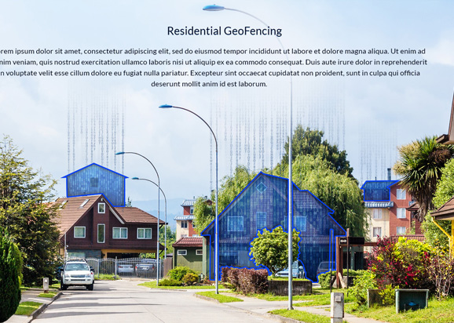

Of current projects and companies that are working directly with Universal Tech Associates in various stages of development.
ArtistXP – The Artist ExperienceTHE ARTIST EXPERIENCE SOCIAL NETWORK IS THE NEW WAY FOR ARTISTS AND FANS TO CONNECT!
Universal Tech Associates is currently working with ArtistXP to take their application into the Asian and Indian marketplace.
Directives:Introductions and proposals for partnerships with Amuse, Pony Canyon, LDT, Lionsgate India and A-Grade Investments. In current discussions and dialogues with all companies.To review potential partner profiles, click here.To see company information, click hereClick to see Technology Media Profile.The Beto Paredes Family of Companies
The Beto Paredes Family of Companies have been together as a technology development group for over 15 years. They represent a consortium of technologies available to ad agencies, medium and small businesses.
Directives:Contracts in completion with Blue Coast Savings, the largest franchise business consultancy in the U.S.A. Currently working discovery into European and Australian markets for sales force development worldwide.To see company information, click hereGEOFenceDSP

GEOFenceDSP.com is a GEO
Fencing platform technology specializing in the use of Big Data to Micro-target customers down to the very fence line of the business or residential location. The GEO business model is based on selling to advertising agencies and large-scale advertisers worldwide.
Directives:Universal Tech Associates have developed a relationship for GEO with ECS Image, one of the largest and most successful advertising agencies in the united states. ECS’s customer base includes Holland America, Sam’s Club, Carnival Cruise and several others across the country. Wirthlin is currently negotiating deals for GEOFenceDSP with Hakuhodo Kettle, Dentsu, and ADK.ConTxt ConTxt is a powerful communication suite of tools developed with over 160 instances of technology including PBX,
presentation tools, email communications and much more. ConTxt is currently working in both the USA and Japan set up with the assistance of Wirthlin.
Directives:
Through Wirthlin introductions, contracts and proposals have bene presented and are in the closing cycle for ConTxt and the government of Japan (METI), the Japanese ministry of defense as well as Honda. Introductions and proposals are also being presented to Hakuhodo Kettle, Dentsu, and ADK.
To review potential Wirthlin partner profiles, click here.InfluxIQ Marketing AgencyInfluxIQ.com
is a technology and marketing firm specializing in small to medium size businesses in the United States. They offer marketing services in Facebook ads, google ad words and the development of marketing website technologies.
Directives:Contracts in completion with Blue Coast Savings, the largest franchise business consultancy in the U.S.A. Currently working discovery into European and Australian markets for sales force development worldwide. To see company information, click here.FluentBUZZ Social Influencer NetworkFluentBUZZ
is a new social influencer network with a residual income model. Influencers make a percentage of any purchase made by customers brought to the site. And this doesn’t just happen once. This happens for the life of the customer. For as long as your customers continue their relationships with our brands, you will make money off every single purchase they make.
Directives:Currently Wirthlin is investigating opportunities for FluentBUZZ to work directly with several potential multi-national corporations to put together an advocacy program crisis management. To see company information, click hereInterested in having Universal Tech Associates and WirthlinWorldwide
represent you on the global stage?
Do you have technologies and marketing platforms that would .benefit from
performance on the world stage?